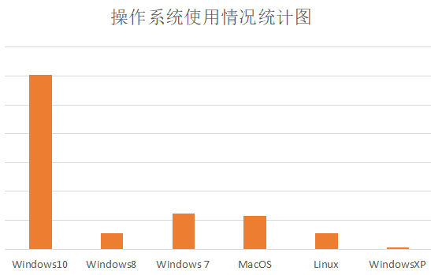
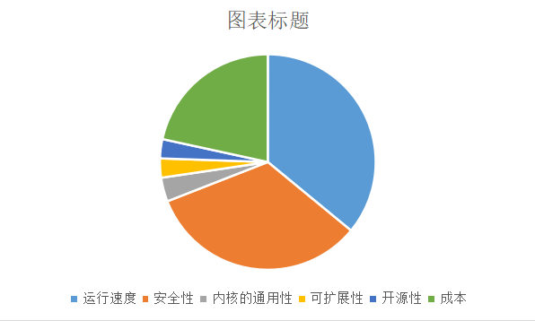

市场调查
写在前面
操作系统
市场调查
市场评估


显然Windows系统占据了计算器操作系统的龙头地位，其用户最为庞大。
使用Linux系统相对小众。而且本次调查中使用Linux操作系统的人均为我校及武汉大学计算机相关专业学生。
本次调查中还发现。大多用户在选择电脑时虽会了解电脑自带的操作系统，但也并不会过多要求。
很多用户在选择电脑时虽会了解电脑自带的操作系统，但也并不会过多要求。
有更换操作系统的经历的人，基本上也都是原操作系统更新升级，较为被动的更换系统。
如果让消费者去选择，消费者大多注重的是自己操作系统在运行速度以及安全性上的性能。